Вау з першої секунди
Печатка-прелоадер, кінематографічний перший екран з парою над мискою, кухар, який готує рамен у такт прокрутці, і горизонтальна галерея фірмових страв.
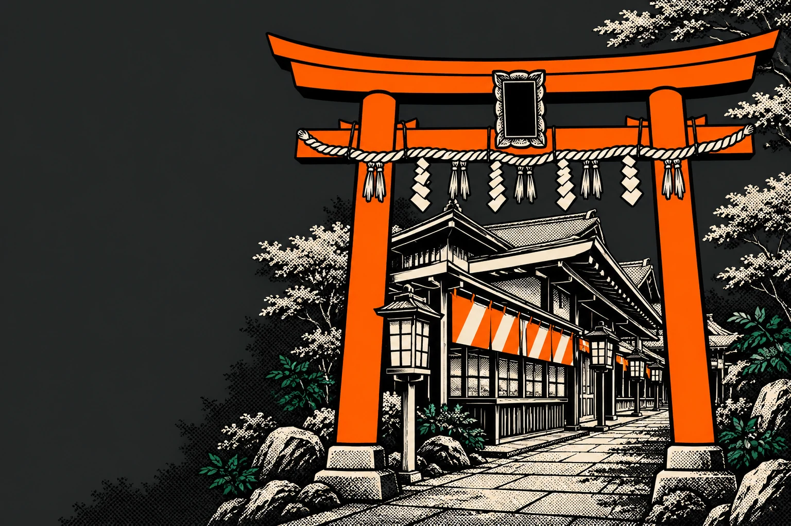
Пропозиція для мережі · листопад 2026
Одна система для всієї мережі Menya Musashi Kyiv: кожна філія отримує власний преміальний сайт — свою адресу, меню й ціни, фірмову страву, статус «відкрито зараз» і пряме замовлення в Choice. Нова філія запускається конфігом, а не новим проєктом.
01Ідея
Гість з Оболоні та гість з Подолу бачать один характер Musashi, але свою філію: свою адресу, графік, ціни, фірмову страву й кнопку замовлення саме туди.
Печатка-прелоадер, кінематографічний перший екран з парою над мискою, кухар, який готує рамен у такт прокрутці, і горизонтальна галерея фірмових страв.
Колір, заголовок, фірмова страва, район і живий статус «відкрито до 22:00» — з конфігу філії. Посилання ?venue=torisho відкриває сайт саме Torisho.
Замовлення та оплата лишаються у вашому Choice. Сайт веде гостя до конкретної страви конкретної філії.
02Сайт філії
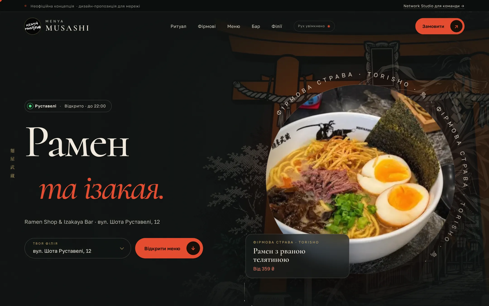
Чорнильна печатка 武蔵 відкриває сайт, торії та самурай реагують на курсор, над фірмовою стравою філії піднімається жива пара. Заголовок, колір і страва — свої для кожної філії.
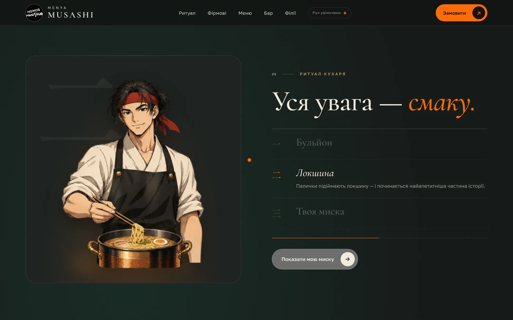
Прокрутка керує аніме-кухарем кадр за кадром: бульйон → локшина → справжнє фото миски філії з ціною. Гість сам «готує» свій рамен.
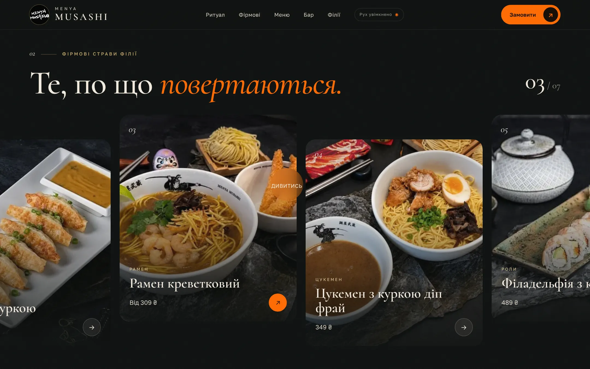
Горизонтальна кінострічка з найкращих фото меню саме цієї філії. На телефоні — нативне гортання пальцем.
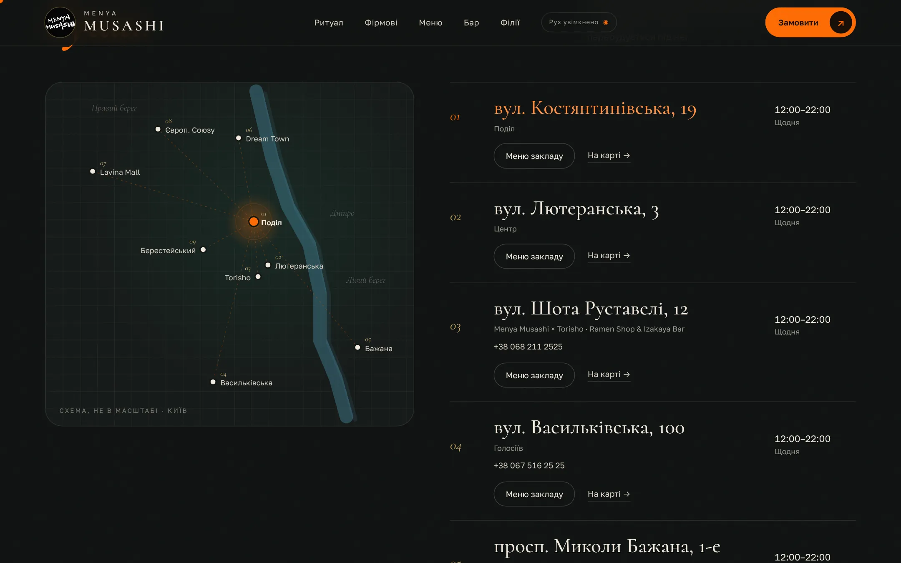
Дев’ять філій на схемі Києва з Дніпром. Натискання на точку перебудовує весь сайт під обрану філію: меню, ціни, бар і посилання на замовлення.
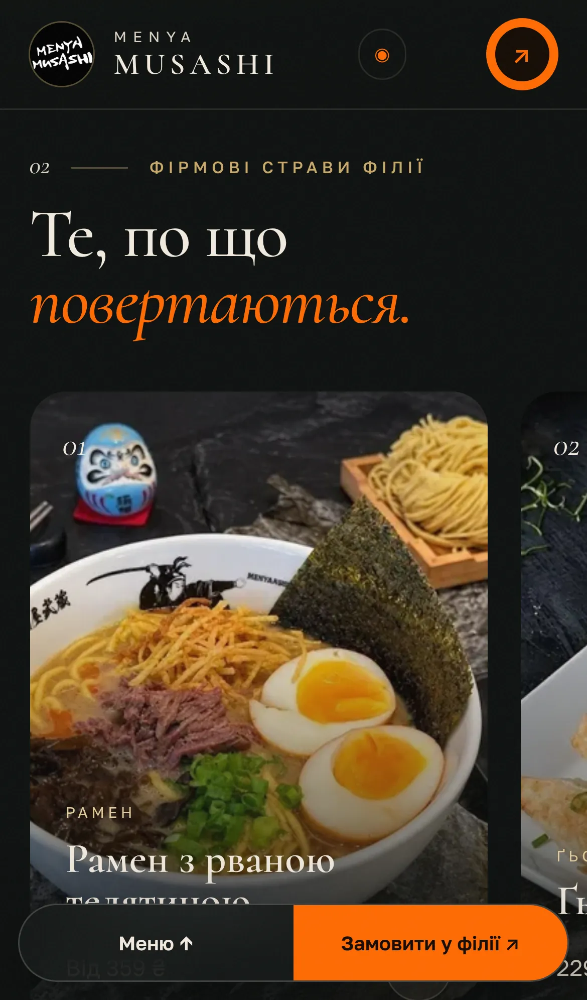
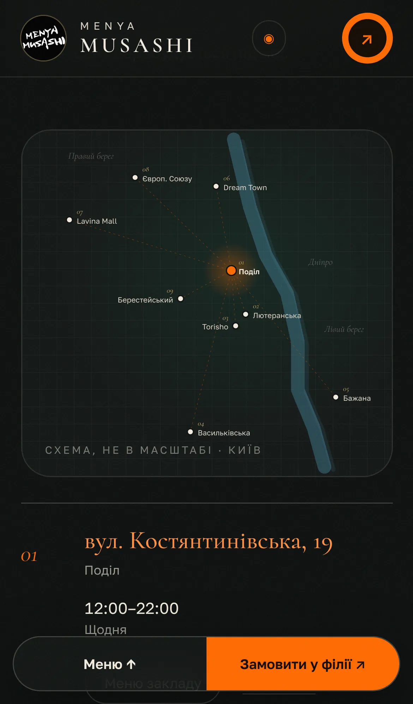
Більшість гостей обирає вечерю зі смартфона. Плаваюча панель «Меню / Замовити у філії» завжди під рукою, усе меню з пошуком за складом — на одному екрані.
03Network Studio
Окрема сторінка для маркетингу та інтеграції. Показує, як мережа керує сайтами всіх філій з одного місця.
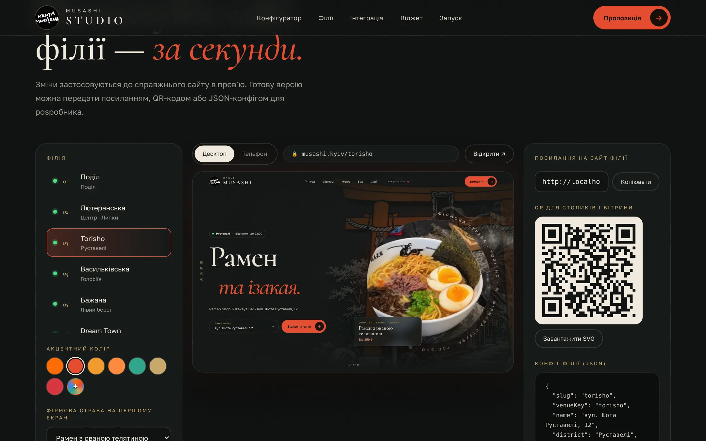
Обираєте філію, колір, фірмову страву й заголовок — справжній сайт оновлюється в прев’ю на десктопі чи телефоні. Результат: посилання, QR-код і JSON-конфіг для розробника.
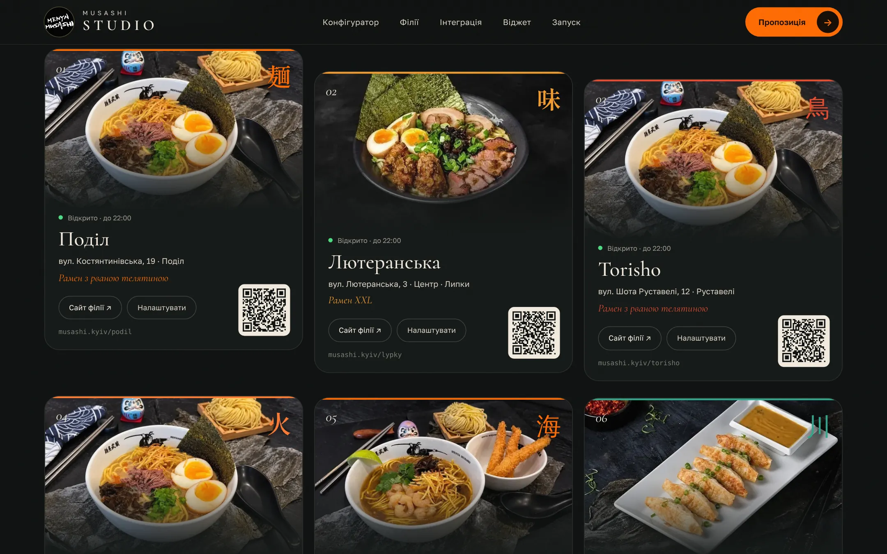
Дев’ять карток філій з живим статусом, фірмовою стравою, адресою сайту та QR-кодом для столиків і вітрин.
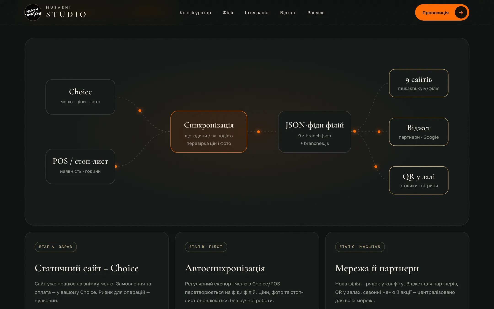
Choice і POS → синхронізація → фіди філій → сайти, віджет і QR. Три етапи: зараз (статичний сайт + Choice), пілот (автосинхронізація), масштаб (мережа й партнери). Контракт даних — на одну сторінку.
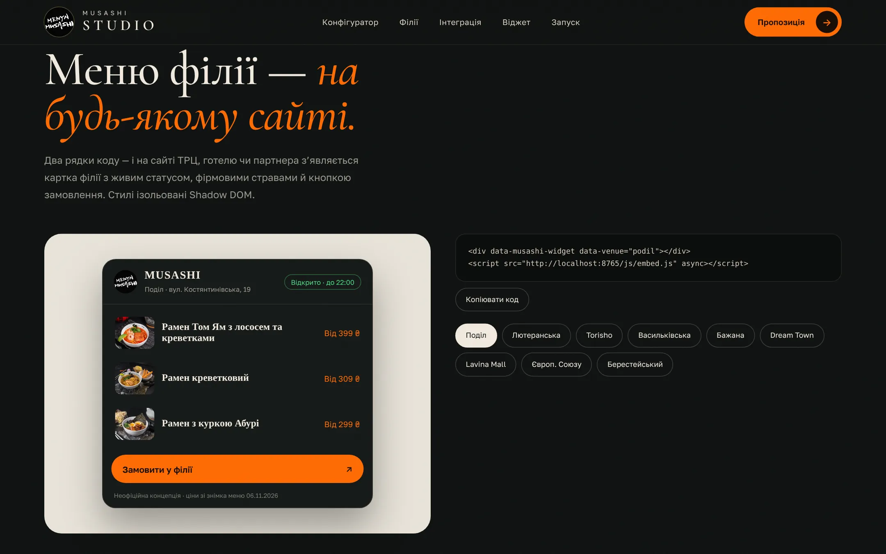
Два рядки коду — і картка філії з живим статусом, фірмовими стравами й кнопкою замовлення з’являється на сайті ТРЦ, готелю чи партнера. Стилі ізольовані.
04План запуску
Одна філія: погодження дизайну, оригінали фото, домен, аналітика переходів у Choice.
Регулярний експорт меню з Choice/POS у фіди філій. Перевірка цін і стоп-листа з командою.
Решта філій через конфіг, QR-набори для залів, віджет для партнерів.
Перші цифри: відкриття меню, вибір філії, переходи до замовлення. Рішення про наступні кроки.
05Пакети
від 45 000 ₴
≈ 2–3 тижні · 1 філія
від 140 000 ₴
≈ 6 тижнів · 9 філій
від 18 000 ₴/міс
щомісяця · вся мережа
Вартість орієнтовна й фіксується після брифу та доступу до даних. Обсяг інтеграції з Choice/POS залежить від доступних експортів або API. Зростання продажів не обіцяється без вимірювання — для пілоту відстежуємо відкриття меню, вибір філії, відкриття карток і переходи до замовлення.
06Що потрібно від вас
07Перевіримо разом
Розділи за годинами, сезонні пропозиції, Ramen Challenge, перейменовані адреси, телефони, правила доповнень і доступність замовлення для кожної філії. Дані демо — знімок від 06.11.2026 без автосинхронізації; остаточну ціну й наявність підтверджує філія.
Наступний крок
Живий сайт будь-якої філії та Network Studio працюють просто з ноутбука чи телефона. Після зустрічі — план пілоту для обраної філії.
Джерела та права. Каталог — знімок відкритих меню дев’яти філій у Choice від 06.11.2026, пов’язаних з офіційним сайтом menyamusashi.shop. Торії, самурай і аніме-кухар — AI-асистовані концепт-ілюстрації для пропозиції, не затверджені матеріали бренду. Анімація лимонаду — візуалізація на основі фото напою. Мапа — схема, не в масштабі. Фото, логотип і назви належать правовласникам і використані лише для демонстрації. Це не офіційний сайт мережі; оплата й надсилання замовлень не імітуються. Шрифти Golos, Cormorant, Shippori Mincho — SIL OFL; анімації — GSAP (standard license).